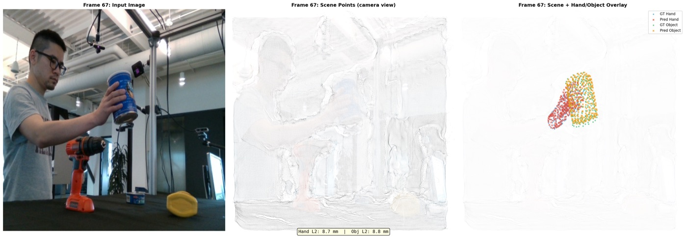

Head-to-head comparison of the two leading configs on the same single DexYCB sequence
(20200709-subject-01/20200709_141754, tracked frames 65–69), but at 5× the training
length (1000 steps vs our earlier 200-step smokes). Both use 4-view batching, PP-crop, and the
v3 coordinate fix. The only difference: --freeze-scene-heads (frozen) vs
--loss-weight-scene 0.1 --no-freeze-scene-heads (sw=0.1).
| Config | Hand L2 | Obj L2 | SVD s3/s1 | Verdict |
|---|---|---|---|---|
| v6 sw=0.1 (unfrozen @1e-5, scene=0.1) | 8.5 mm BEST | 9.0 mm BEST | 0.400 = GT | Wins all |
| v6 frozen (scene=1.0) | 27.6 mm (3.2× worse) | 35.7 mm (4.0× worse) | 0.180 (below 0.20 threshold) | Hand shape degrades with more training |

The loss_weight_scene=0.1 + unfrozen heads config is now confirmed as the best
single config across every experiment in this exploration (v1 through v6). It outperforms frozen heads
at both short (200 steps) and long (1000 steps) training. The gradient-magnitude balance diagnosed in the
root-cause page holds at scale.
Next: a full multi-sequence DDP training run on all 1000 DexYCB sequences is in
flight: om-li2obdxu (8 GPU, 400 outer × 20 inner = 64k effective steps).